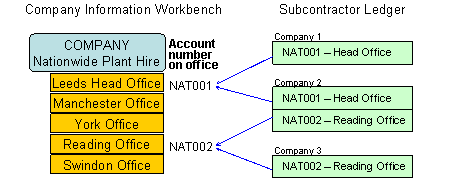
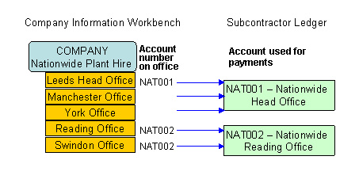

<?xml version="1.0" encoding="utf-8"?>
<html lang="en" xmlns:MadCap="http://www.madcapsoftware.com/Schemas/MadCap.xsd">
    <head><title>Ledger Accounts and Companies</title>
    </head>
    <body>
        <MadCap:concept term="Topics" />
        <h1 class="print">Ledger Accounts and Companies</h1>
        <p>Accounts in the financial ledgers (<MadCap:variable name="Variables.pl suppliers" /> in <span class="module"><MadCap:variable name="Variables.purchase ledger" style="text-transform: capitalize;" /></span>, subcontractors in <span class="module">Subcontractor Ledger</span> and customers in <span class="module"><MadCap:variable name="Variables.sales ledger" style="text-transform: capitalize;" /></span>) represent the financial relationship between an individual <MadCap:variable name="Variables.kco company" /> (kco) and an <strong>office</strong> of a company in the Company Information Workbench.&#160; You can set up the ledgers so that they take information about <MadCap:variable name="Variables.pl suppliers" />, subcontractors and customers from the office information held in the Company Information System. In this way, information is kept consistent.</p>
        <p>Ledger accounts are <MadCap:variable name="Variables.kco company" />-specific; that is, in any <MadCap:variable name="Variables.kco company" /> (kco) you would only set up ledger accounts for the offices you deal with.&#160; </p>
        <p>
            
        </p>
        <blockquote style="MARGIN-RIGHT: 0px;" dir="ltr"><span><MadCap:variable name="Variables.kco company" style="text-transform: capitalize;" /> 1 only deals with the Leeds office.<br /><MadCap:variable name="Variables.kco company" style="text-transform: capitalize;" /> 2 deals with both the Leeds and Reading offices.<br /><MadCap:variable name="Variables.kco company" style="text-transform: capitalize;" /> 3 only deals with the Reading office.</span>
        </blockquote>
        <p>The ledger account number can be specified on the office record.&#160; If different <MadCap:variable name="Variables.kco companies" /> deal with the same office, they must use the same ledger account number.&#160; </p>
        <p>More than one office can relate to the same ledger account, so for example if you deal with more than one payment office, you would need to specify on the offices which account the payment should go to (see <a href="WDCI0005_Account_Numbering_Policy.html">Account Numbering Policy</a>).&#160; If someone raises an order against an office that does not have a specified ledger account, <MadCap:variable name="General.ProductName" /> uses the account number from the head office of that company.</p>
        <p>
            
        </p>
        <div class="configuration">
            <h2 class="print">To link a ledger to the Company Information System:</h2>
            <ul>
                <li>Set the parameter <span class="parameter">USECIS </span>in the ledger to <span class="userinput">Y</span>.</li>
            </ul>
            <p class="noteheader">NOTES</p>
            <div class="note">
                <ol>
                    <li>Each ledger can be set up to use the Company Information Workbench individually, but if you are using auto-numbering, all ledgers MUST use the Company Information Workbench.</li>
                    <li>If you start using the Company Information Workbench after you have already entered accounts in the ledgers, and you need to transfer existing information to the Company Information System, contact Construction Industry Solutions Ltd.</li>
                </ol>
            </div>
        </div>
    </body>
</html>